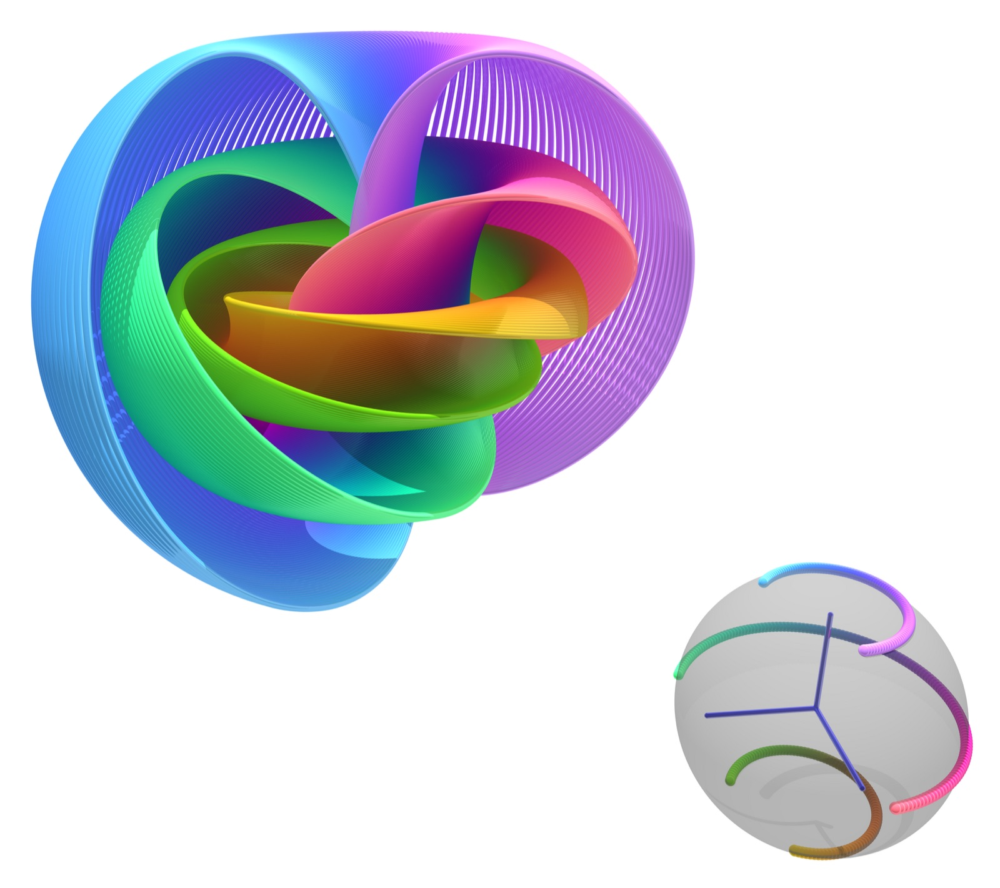

Featured article

Hopf fibration
The Hopf fibration presents the 3-sphere as a bundle of circles over the 2-sphere: every point of S² has a circle above it, and any two of those circles are linked.
Written by researchers, free for everyone. Look up a concept, or write about one.
20,000+ pages · anyone can edit · every change is public
The nLab grows because readers improve it. You don’t need an account to start a draft here.
Every concept deserves a page. Open one that exists, or name a new one.
Visual: type into the page as normal text, with a formatting bar and a formula box.
LaTeX: edit the source directly, with suggestions for \commands, [[page links]] and theorem environments.
Your draft is saved in your browser as you type. When it’s ready, send it to ncatlab.org and mention bigger changes in the forum.
Try it: LaTeX with suggestions
Type \ for symbols, [[ for pagesRecent edits, the featured article and news from around the Lab.
Featured article

The Hopf fibration presents the 3-sphere as a bundle of circles over the 2-sphere: every point of S² has a circle above it, and any two of those circles are linked.
Recent edits
News
Start from a field and follow the links.
Foundations, category theory, homotopy theory, geometry and algebra.
All mathematicsMechanics, field theory, quantization, gauge theory and strings.
All physicsLogic, modalities and the philosophy of physics.
All philosophyWhat it is, and how it is run.
Definition (the nLab)
A wiki for collaborative work on mathematics, physics and philosophy, built on the idea that the links between pages are themselves a way to record knowledge.
Nobody is “in charge” of the Lab: it is an exercise in open collaboration.
Read, share and build on it — acknowledge the source, as usual in academia.
Pages change; every page keeps its full public history.
Questions, corrections and edit announcements go there.
Founded by Urs Schreiber. Hosted at Carnegie Mellon University; software maintained by the nLab’s technical board.
New pages, notable edits, forum highlights and events from the nLab community, delivered as a short monthly digest.